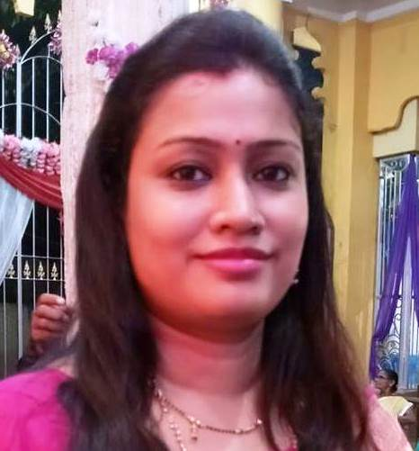

Welcome to International Conference on Computational Intelligence and Information Retrieval (CIIR 2019)
Welcome everyone to the 1st IInternational Conference on Computational Intelligence and Information Retrieval (CIIR 2019) scheduled during September 23-24, 2019 at Institute of Engineering & Management, Salt Lake, and Kolkata, India. This event will take place at Kolkata, the city of joy, one of the major educational hubs of the country & a beautiful metropolitan city. We believe we have chosen a venue that guarantees a successful technical conference amidst the rich cultural and natural heritage.
Continuing from the outstanding success of previous 50 international conferences in India and 6 over other countries like Canada, New York, Bangkok, we are proud to present International Conference on Computational Intelligence and Information Retrieval (CIIR 2019) which will provide an opportunity for researchers, educators and students to discuss and exchange ideas on issues, trends, and developments in Data Science and Informatics, Computational Intelligence, Information Retrieval. The conference aims to bring together scholars from different disciplinary backgrounds to emphasize dissemination of ongoing research in the fields of in Science and Informatics, Computational Intelligence, Pattern recognition and Information Retrieval. Contributed papers are solicited describing original works in the above mentioned fields and related technologies. The conference will include a peer-reviewed program of technical sessions, special sessions, business application sessions, tutorials, and demonstration sessions.
Important Dates
- Submission Deadline: 25th June, 2019
- Acceptance Notification: 25th July, 2019
- Early bird registration: 5th August, 2019
- Last date of registration: 10th September, 2019
- Camera Ready Paper Submission: 15th September, 2019
- Conference Dates: September 23-24, 2019
Paper Submission Guidelines:
Paper length should be 8 pages in the below mentioned format. All submissions are subject to screening for plagiarism by Turnitin. Double blind review system will be followed and each paper will be reviewed by at least two reviewers. All papers must be submitted online via easychair submission portal. All submissions will be thoroughly peer-reviewed by experts based on originality, significance and clarity. Only papers presenting original content with novel research results or successful innovative applications will be considered for publication in the conference proceedings.
Formatting Guidelines:
Download the paper template.
Submission link:
Selected papers need to be submitted on or before the given deadline at editor.cipr@gmail.com.
Publication:
Accepted papers will be published in Conference Proceeding of Computational Intelligence and Information Retrieval(CIIR 2019) with ISBN. Selected papers will be published in esteemed journal.Call for Paper:
Original High quality papers in all the following topics of interest (but are not limited) are solicited. The papers exploring new directions will receive especially careful and supportive reviews.
Track - 1: Computational Intelligence
Track - 2: Pattern Recognition
Track - 3: Information Retrieval
|
Track - 4: Data Science and Data Analytics
Track - 5: Advance Computing
|
To ensure publication of a paper in the Proceedings, at least one author has to register by submitting a normal registration fee within deadline as indicated below. The over-length charge (more than 8 pages) is Rs. 500 (for Indian authors) or $10 (for foreign authors) per extra page for a maximum of two extra pages. For further details about the registration process please go through the conference website.
Categories |
Attendee/ Non-Author |
Poster Presenter |
Research Scholar(JRF & SRF)/ Students(per paper) |
Author(Academicians)(per paper) |
Author(Industry Experts) |
Extra Pages/per page(If more than 10 pages) |
Indian/SAARC Countries(Early Bird) |
300₹ |
1000₹ |
2500₹ |
3000₹ |
4000₹ |
200₹ |
Indian/SAARC Countries |
500₹ |
1500₹ |
3000₹ |
4000₹ |
5000₹ |
300₹ |
Indian/SAARC Countries(Spot Registration) |
500₹ |
1500₹ |
3500₹ |
4500₹ |
5500₹ |
500₹ |
Non-SAARC Countries(Early Bird) |
$30 |
$50 |
$80 |
$90 |
$110 |
$10 |
Non-SAARC Countries |
$50 |
$60 |
$90 |
$100 |
$120 |
$10 |
Note: The registration fee includes participation in the conference, publication in proceedings, High Tea, Lunch for 2 days, Conference kit, and Participation certificate.
Chief Patron
Prof. (Dr.) Satyajit Chakrabarti
Institute of Engineering & Management, India
Patrons
Dr.Satyajit Chakrabarti
Institute of Engineering & Management, India
Conference
General Chair
Prof. (Dr.) V. E. Balas
Senior Member IEEE, Professor, Aurel Vlaicu, University of Arad, Romania
Honorary
Convener
Dr. Abhishek Bhattacharya
Institute of Engineering and Management, Kolkata, West Bengal, India
Co-Convener
Dr. Soumi Dutta
Institute of Engineering and Management, Kolkata, West Bengal, India
Mrs. Sujata Ghatak
Institute of Engineering and Management, Kolkata, West Bengal, India
Advisory Chair
Prof. Jaya Sil
Department of Computer Science and Technology, Indian Institute of Engineering Science and Technology, Shibpur, Howrah, West Bengal, India
Dr. Asit Kumar Das
Professor, Department of Computer Science and Technology, Indian Institute of Engineering Science and Technology, Shibpur, Howrah, West Bengal, India
Dr. Florin Popentiu Vladicescu
"UNESCO Chair in Information Technologies , University of Oradea, Romania"
Advisory Program Committee
Dr. Sheng-Lung Peng
Professor, Department of Computer Science and Information Engineering, National Dong Hwa University, Hualien, Taiwan
Dr. Ahmed A. Elngar
Assistant Professor of Computer Science Chair of Scientific Innovation Research Group (SIRG) Director of Technological and Informatics Studies Center Beni-Suef University, Egipt
Prof. (Dr.) V. E. Balas
Senior Member IEEE, Professor, Aurel Vlaicu, University of Arad, Romania
Prof. (Dr.) Mahmoud Shafik
BEng (Hons) MSc PhD CEng FHEA MIET MASME,University Professor AC in Intelligent Mechatronics Systems and Technology,Principal Technology Investigator, Lead Academic of EEE Programme
Dr. Arnab Bhattacharya
Deptartment of CSE, Indian Institute of Technology, Kanpur
Publicity Chair
Dr. Debashis De
Department of Computer Science and Engineering, Maulana Abul Kalam Azad University of Technology, India
Dr. Soumen Kumar Pati
Associate Professor, Department of Bioinformatics, Maulana Abul Kalam Azad University of Technology, West Bengal, India
Prof. (Dr.) Ujjwal Maulik
Professor in the Dept. of Comp. Sc. and Engg., Jadavpur University, Kolkata, India
Dr.Nilanjan Dey
Assistant Professor, Techno International New Town, Kolkata
Technical Program Committee
Dr.Nilanjan Dey
Assistant Professor, Techno International New Town, Kolkata
Dr. Tanupriya Choudhury
Associate Professor, University of Petroleumand Energy Studies
Dr. Soma Barman Mandal
Associate Professor, Institute of Radio Physics & Electronics, CU
Dr. Subhranil Som
Professor, Amity University, Noida
Dr.Khalil AJAMI
Professor, Syrian Virtual University
Dr.Ali Dewan
Assistant Professor, Athabasca University
Dr. S. Devapriya Dewasurendra
Senior Lecturer, Department of Computer Engineering, Faculty of Engineering, University of Peradeniya, Sri Lanka
Dr. Indrajit Bhattacharya
Assistant Professor & Head, Kalyani Government Engineering College
Dr. Kartic Chandra Mondal
Assistant Professor, Department of Info. tech., Jadavpur University
Dr.Ram Sarkar
Associate Professor, Computer Science and Engineering Department, Jadavpur University
Dr.J P Singh
Assistant Professor, National Institute of Technology Patna
Dr. Rabindra K. Barik
Assistant Professor, KIIT University
Dr.Nilanjan Dey
Assistant Professor, Techno International New Town, Kolkata
Dr. Sudip Kumar Adhikari
Assistant Professor, Cooch Behar Government Engineering College, West Bengal
Dr. Binod Kumar Pattanayak
Professor, Siksha 'O' Anusandhan Deemed to be University
Dr. Rashmi Soni
Professor, St.Martin's Engineering College Hyderabad
Dr.PRADEEP KUMAR TIWARI
Assistant Professor, Manipal University Jaipur
Dr.Arindam Pal
Research Scientist, TCS Research and Innovation
Dr. B.K.Tripathy Senior
Professor and Dean, VIT, Vellore
Dr.G.Suseendran
Assistant Professor, VELS INSTITUTE OF SCIENCE, TECHNOLOGY & ADVANCED STUDIES (VISTAS), CHENNAI
Dr. Pradeep Kumar Mallick
Associate Professor, School of Computer Engineering,KIIT Deemed to be University, Odisha
Dr.Mudassir Kha
Assistant Professor, King Khalid University
Dr. Sandeep Kumar Poonia
Assistant Professor, Amity University Rajasthan, Jaipur
Dr. Brojo Kishore Mishra
Professor, GIET University
Dr. Kailash Kumar
Professor, Saudi Electronic University
Dr.Sudipta Roy
Professor, Assam University
Dr Anitha S
Professor, AICTE Member
Dr Anuranjan Misra
Professor, Tecnia Institute of Advanced Studies, New Delhi
Dr. Durgesh Nandan
Adjunct Professor, Aditya Engineering College, Surrampalem, Andhra Pradesh
Dr. Arun Sharma
Associate Professor and Head-IT, Indira Gandhi Delhi Technical University for Women
Dr.Pradeep Reddy G
Assistant Professor, Gokaraju Rangaraju Institute of Engineering and Technology
Dr.Pradeep N
Associate Professor and PG head, Bapuji Institute of Engineering and Technology, Davangere,Visvesvaraya Technological, University, Belagavi
Dr Sudhakar Tripathi
Associate Professor, REC AmbedkarNagar, UP, India
Dr. Mohd Nazri Ismail
Associate Prof, UPNM
Dr. S. Devapriya Dewasurendra
Senior Lecturer I, Department of Computer Engineering, Faculty of Engineering, University of Peradeniya
Dr. Kartick Chandra Mondal
Assistant Professor, Department of Info. tech., Jadavpur University
Dr. Prashant R. Nair
Associate Professor, Amrita Vishwa Vidyapeetham, Coimbatore
Dr. P. Thangaraju
Associate Professor, Bishop Heber College, Tiruchirappalli, India
Publication Chair (s)
Mrs. Ratna Mondal
Institute of Engineering & Management, India
Dr. Sunanda Das
Neotia Institute of Technology, Management and Science, Kolkata, West Bengal, India
Dr. Shampa Sengupta
MCKV Institute of Engineering, Howrah, West Bengal, India
Organizing Chair (s)
Mr. Rupam Bhattacharya
Institute of Engineering & Management, India
Mr. Abhijit Sarkar
Institute of Engineering & Management, India
Mr. Biswajit Maity
Institute of Engineering & Management, Kolkata, W.B., India
Registration Chair(s)
Mr. Ankan Bhowmik
Institute of Engineering & Management, India
Mrs. Ankita Mondal
Institute of Engineering & Management, India
Mrs. Sreelekha Biswas
Institute of Engineering & Management, India
Mr. Amitavo Chattopadhyay
Institute of Engineering & Management, India
Finance Chair (s)
Mr. Rupam Bhattacharya
Institute of Engineering & Management, India
Mrs. Nayantara Mitra
Institute of Engineering & Management, India
Keynote Speaker
Prof. (Dr.) Sheng-Lung Peng
National Dong Hwa University, Computer Science and Information Engineering, Faculty Member
Prof (Dr.) Basabi Chakraborty
Professor, Iwate Prefectural University, Japan
Prof. ( Dr.) Ahmed A. Elngar
Computer Science Chair of Scientific Innovation Research Group (SIRG) Director of Technological and Informatics Studies Center Beni-Suef University, Egipt
 Prof. (Dr.) Asit Kumar Das
Prof. (Dr.) Asit Kumar Das
Professor, Department of Computer Science and Technology, Indian Institute of Engineering Science and Technology, Shibpur, Howrah, West Bengal, India
Dr Samit Bhattacharya
Associate Professor, Dept. of Computer Science and Engineering, IIT Guwahati
Plenary Speaker
Prof. (Dr.) Ganapati Panda
Professor and Advisor at C V Raman College of Engineering, Bhubaneswar
Professorial Fellow at Indian Institute of Technology Bhubaneswar
 |
||
Dakhineshwar Temple |
Belur Math |
St Pauls Cathedral |
Victoria Memorial |
Kolkata Gate |
Princep Ghat |
Venue:
Institute of Engineering and Management (Ashram Building) GN-34/2, Opposite to Nalban, Sector – V, Saltlake Electronics Complex, Next to Cognizant Technology Solutions Private Ltd, Kolkata, West Bengal 700091
Contact Us:
Prof. Abhishek Bhattacharya
Convener, CIIR 2019
Mobile: +919903149600
Email: abhishek.bhattacharya@iemcal.com
Dr. Soumi Dutta
Co-Convener, CIIR 2019
Mobile: +917003705194
Email: soumi.dutta@iemcal.com
Prof. Sujata Ghatak
Co-Convener, CIIR 2019
Mobile: +919547710469
Email: sujata.ghatak@iemcal.com